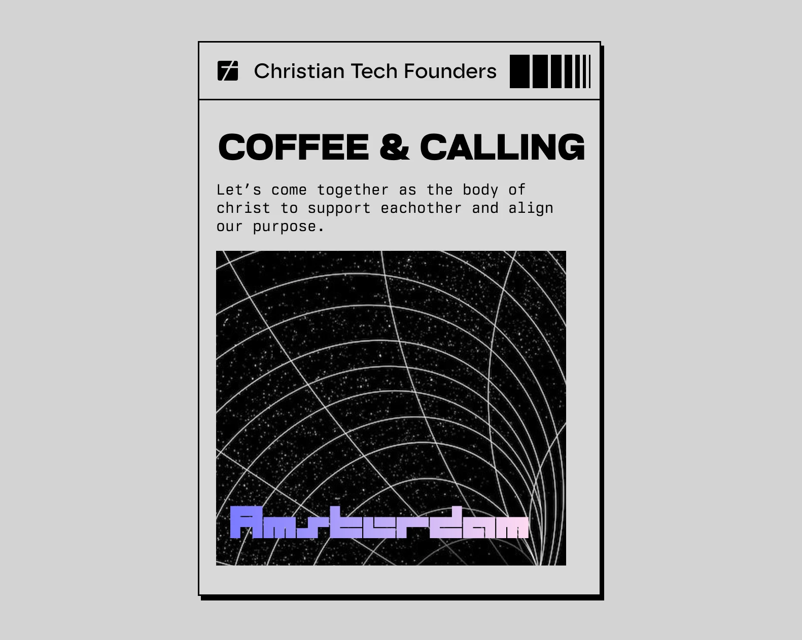

For Christian founders who want their work to matter for God. Practical thinking on faith, calling and technology, plus invitations to meet in person.

Feel alone between faith and tech? Three practices to align your business with God, and an invitation to Coffee & Calling in Amsterdam on 10 January 2027.
Read more